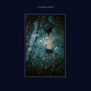
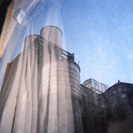

Quick Takes (February 2017)
Welcome to our second Quick Takes of the year! If you've been eagerly anticipating this month's choices (which I'm sure you are), then we deeply apologize for the slight delay. But alas, we're here to report on what was one of the most fascinating and diverse months since we started this feature.
Now, that's not to say that it wasn't necessarily a banner month in terms of releases, either. If you simply browsed through the scores first, then you'll notice that I wrote some slightly scathing words on much-beloved art pop project Dirty Projectors. Carl, on the other hand, was slightly disappointed by one of his favorite artists, Sun Kil Moon. But what did we do like? Well, I, as always, appreciate The Feelies' unremitting dependency, while Carl was somewhere in the desert enjoying All Them Witches' expansive new LP. We also felt those soulful feels, as we both had very positive things to say about Sampha and Syd.
What were your favorite albums during the month of February? Anything we didn't get to review on our site that we should've? You can always reach us on facebook, or on our official twitter page. - Juan
...
 All Them Witches
All Them Witches
Seeping Through the Water
(New West Recordings)
The fourth studio LP from All Them Witches is another instinctive splurge of the band’s dearth of blues, psychedelic and desert resources, but Sleeping Through The War is perhaps their sharpest release yet. As we’ve come to expect, the tracks lunge prog-like from one paradigm to another, maintaining nothing other than the desert-dry fuzz that suspends itself throughout the record. The pace changes, with songs impulsively going off on tangents, but there is never any hint of Charles Michael Parks Jr. losing his imperious control. Compared with their previous outputs, Sleeping Through The War sounds generally tighter in all departments, but it’s the readiness at which Parks Jr. releases jewel-like hooks that sets this album apart. Opening track Bulls starts with a lethargic, complacent but glittering first 90 seconds, before a huge, fat-stacked riff is unearthed. Elsewhere, the Kyuss-evoking chug of 3-5-7 and the stoned, mathy Alabaster keep you on your toes. Sleeping Through The War is the embodiment of a gentle giant: huge in presence but unwaveringly accessible. [8/10] Carl Purvis
Communions
Blue
(Fat Possum)
At first, Danish quarter Communions differentiated themselves from their scene’s more noisier and experimental leanings by taking a more affable and swaggering Brit pop approach. They’ve always aimed for a more delightfully buoyant sound, and their first full-length effort Blue fulfills the promise of a more disciplined power pop sound that they only hinted at with their self-titled EP. Album opener Come On, I’m Waiting is undeniably likable with its dopey, heart-on sleeve lyrics and new wave-evoking guitars, and they bookend it quite pleasantly with the immense-sounding closer Alarm Clocks. But Communions can’t quite hold that momentum for a full forty minutes, as the rest of Blue flounders between unmemorable jangle melodies and awkward Gallagher-brother vocal wails and tired power chords. They can definitely carry a tune, but after a promising EP that hinted at many directions (not to mention that it was a succinct five tracks) Blue only amplifies their indecisiveness instead of pointing out their strengths as songwriters. [6/10] Juan Edgardo Rodríguez
 Dirty Projectors
Dirty Projectors
Dirty Projectors
(Domino)
David Longstreth’s stubborn experimentation has always been Dirty Projectors’ main selling point. For better or, to this reviewer, for worse, the project’s always encapsulated a myriad of ideas with a narrow minded and frustratingly oh-so-clever approach that ultimately leads to sharply uncorrelated songs. Longstreth’s self-titled latest is a direct response to his romantic dissolution with past member Amber Coffman, which provides an ample context of how creation leads to self-therapy. And for the first time, some of it does click - Up In Hudson is a genuinely bittersweet account on those loving reminiscences that are locked into our memory, ending with a minimal-like carnival that could serve as a fitting montage of Longstreth’s past relationship. But his indulgences do get the best of him, unfortunately, and the rhythmic artificiality of Work Together and Ascent Through Clouds amount to nothing more than forced, tacked-on digital samples that quickly lose traction despite their decent introductions. Longstreth’s unlistenable scatting also hasn’t gotten any better, and it really doesn’t benefit his aspirations to modernize the Dirty Projectors brand. We can only assume that there’s a deep meaning within the songs’ hall-of-mirrors approach to songwriting, but Dirty Projectors ultimately leaves one too puzzled to empathize with apart from letting out a false, mouth-gaping awe. [5/10] Juan Edgardo Rodríguez
 Dutch Uncles
Dutch Uncles
Big Balloon
(Memphis Industries)
At the beginning of their career, Dutch Uncles appeared to be at the cusp of mainstream success with a good number of chart-flirting singles that married pop accessibility with intricately arched compositions. Except that the English band had other plans in mind, as they refused to simplify their proggy art pop to further embolden their own experimental leanings. Their last record, O Shudder, was their best yet, where they finally found a way to provoke a more meaningful narrative instead of applying their artful devices as a crutch. Big Balloon, however, is by far their more musically challenging, and in doing so they once again fully jettison any mental concepts to free that muse and unleash their otherwise hampered creativity. Somewhere in here there’s an album that makes a coherent artistic point even if many of the songs are especially fun, from the Prince-like keyboard stylings of Oh Yeah to the dancehall-meets-Laurie Anderson minimal chamber pop of Achameleon. It’s an unfettered display of eighties-evoking posing that suits them perfectly well, but it also sounds like a step back after they’d already figured out how to match their compositional smarts with a clear message. [6/10] Juan Edgardo Rodríguez
The Feelies
In Between
(Bar None)
The Feelies come and go like a passing wind. Even though they’re not exactly prolific, the New Jersey foursome craft their brand of reliable jangle rock with an openness and assertiveness that’s instantly familiar to those who’ve been following them since the early eighties. It’s as unassuming as it is stubbornly unchangeable, as they crank out their mantric strums with casual but also demanding arrangements. And In Between, their first in six years and second in over twenty five, captures the same raw, post-Velvets swing that’s been present since they went into hibernation after their less rehearsed-sounding Time for a Witness. Whereas their comeback record, Here Before, was more rhythmically alert, In Between takes a more introspective and low-key approach even if the steady paisley grooves remain. Or at least that’s what it initially seems, until they let out a few surprises in the album’s second half, like how they incorporate fuzztone dynamics and droning guitar layers on the closing nine minute title track. It puts you on a kick after soothing you with its pacifying hooks. And really, it’s in making those small variations where The Feelies find their gentle collision of energy and contemplation. [7/10] Juan Edgardo Rodríguez
 Molly Burch
Molly Burch
Please Be Mine
(Captured Tracks)
There is something soothingly alluring about the reverb-drenched, alt-country sound found in Molly Burch’s debut LP. Please Be Mine is a collection of love songs delivered from various facets of Burch’s quivering vocal tones, with her superb voice a match made in heaven for her retro-backwood sound. The arrangements of the songs tend to remain simplistic, allowing the showcase to be fully on the voice and the romantically warm guitars. It’s easy to draw comparisons to the likes of Angel Olsen, and as far as the quality of Burch’s vocals go, she’s right up there with her. Olsen does however transmit a striking intensity that is lacking in Burch’s delivery, and that fact alone is a limitation of the overall finished product. Please Be Mine is a charming record that remains engaging and consistently pleasant, but you have to feel that there’s another gear in Molly Burch’s engine-room that could get the most out of her prodigious talent. [6/10] Carl Purvis
Sampha
Process
(Young Turks)
Sampha Sisay is a rare musician. The chances are high that you’ve heard areas of his portfolio without even realising it, with Drake, Kanye and the Knowles sisters just some of the global megastars that have enlisted his writing, production and vocal prowess in recent times. With his debut LP Process, Sisay has finally given an insight to the man behind the anonymity, and it’s a stunning insight at that. Process is ultimately an album that is harrowingly personal. Sisay douses it with regret, proverbially beating himself up at regular intervals, with the loss of his mother to cancer at the forefront of the record. His voice is an art form in itself, breathy and warm and aching with impartial soul. The track’s arrangements are stunning, from the sparse opener Plastic 100°C to the propulsive beat of Blood On Me, while the devastatingly beautiful, reflective piano ballad of (No One Knows Me) Like The Piano would stop the coldest of hearts. Sampha has stepped out of the shadows, and on the evidence of Process, it will be very difficult for him to return to them again. [8/10 – Believe The Hype] Carl Purvis
Sun Kil Moon
Common as Light and Love are Red Valleys of Blood
(Caldo Verde)
In 2014, Mark Kozelek released Benji - his 6th album under the Sun Kil Moon moniker. In my opinion, it is one of the best albums I’ve ever listened to. I still listen to it regularly, and it still affects me every bit as much as it did the first time. With Benji, Kozelek had perfected his gift for storytelling, delivering outrageously candid monologues shrouded in downright vulnerability. As was the case with 2015’s Universal Themes and 2016’s Jesu/Sun Kil Moon, these heights aren’t in any danger from Common As Light…, but there’s no denying that this is an epic stream of consciousness – the like of which could only be made to work by Kozelek. The themes explored throughout the record’s massive 130-minute runtime are remarkably current – for example the Orlando shootings and the Paris attacks - and it’s these moments where the album commands absolute attention. Not even Kozelek can command it entirely for 130 minutes, though, and when you’ve already achieved perfection just three years previously, it’s always going to be hard to reach those heights again. [6/10] Carl Purvis
Syd
Fin
(Columbia)
As one of the main songwriters of the Internet, Sydney Bennett would write about the healing power of grief over a soundtrack that incorporated busy and colorful jazz and neo-soul beats. Now she’s taking a solo route with a simple but commanding stage name, Syd, and in stepping out of her The Internet guise she’s now exploring the post-Y2K R&B sonicscapes popularized by producers like Timbaland. But it’s not enough to have a good sound to go for it, and Syd confidently attempts to turn herself into a pop starlet while retaining her sinuous and offbeat rhythms. What first captures one’s attention about this project is how she grants a fitting tribute to artists like Aaliyah with her sultry grooves, like in Know, which cannily imitates the stop-start playful dynamics of classic songs like Are You That Somebody. But Syd also experiments with other more modern sounds, though sometimes her talents as a sound engineer better accentuate her still-nascent career as a performer. Syd hasn’t quite molded herself as a pop luminary, but the self-determined themes on Fin do portray an independent woman who’s fueled by the power of love. [7/10] Juan Edgardo Rodríguez
 Tim Darcy
Tim Darcy
Saturday Night
(Jagjaguwar)
The album art for Tim Darcy’s first solo LP depicts him sitting cross-legged on a wooden chair with nothing but a haphazard vase of flowers for company. It’s an immediate indication that Saturday Night is going to be a reflection of Darcy’s own ideal Saturday night: introspected and fundamental but with a raw flamboyance and serrated edges. As the frontman of Montreal post-punk band Ought, Darcy has built a reputation for being one of the sharpest wordsmiths around, using his band’s frenetic, squelchy guitars as a cornerstone to weave his wit around. Saturday Night is less obtrusive than an Ought record, and is a collection of songs more suited to the reclusive aspect of Darcy’s make-up rather than a handful unsuitable for development with the band. There are plenty of fidgety moments – opening track Tall Glass of Water acting as an instant example - that let you know the music’s from the same ballpark, but a different game is being played there. Saturday Night is a record that is almost misanthropic in its progression, and an intriguing insight into Tim Darcy the artist. [6/10] Carl Purvis
...
20 March, 2017 - 00:21 — No Ripcord Staff